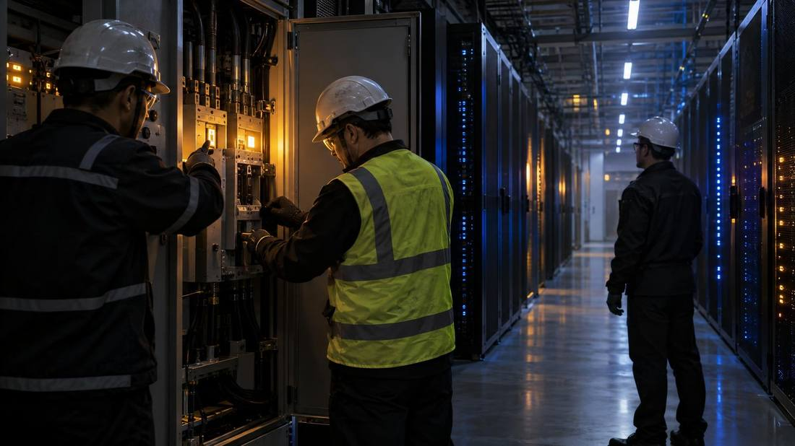

California Proposes Mandatory Frontier AI Oversight, State Shutdown Powers
California Governor Gavin Newsom released legislative recommendations on November 18, 2026, that would require large frontier AI developers to meet state-set safety standards, submit to continuous oversight by licensed independent verifiers, and face state-ordered emergency shutdowns of models posing imminent catastrophic risks. The 85-page report, AI Safety in 2026 and Beyond, also proposes standby authority to cap recursive self-improvement. The recommendations are not law; they are written to shape legislation when lawmakers return in December.

- 01THE ORDER — On September 18, 2026, Newsom signed an executive order on independent oversight and an AI kill switch, asking experts for proposals within two months and accelerating California's independent-verification and AI-auditor laws.
- 02THE REPORT — On November 16, 2026, the California Government Operations Agency dated its 85-page report, AI Safety in 2026 and Beyond, prepared with the Office of Emergency Services and advisers Jason Goldman, Gillian Hadfield, Alondra Nelson and Rob Reich.
- 03THE RELEASE — On November 18, 2026, Newsom's office released the recommendations: state-set standards, licensed independent verifiers, emergency shutdown authority and standby caps on recursive self-improvement.
WHAT HAPPENEDWhat Happened
California Governor Gavin Newsom's office released legislative recommendations on November 18, 2026, in an 85-page report titled AI Safety in 2026 and Beyond, prepared by the California Government Operations Agency with the California Office of Emergency Services and outside advisers Jason Goldman, Gillian Hadfield, Alondra Nelson and Rob Reich. The report answers Newsom's September 18 executive order on independent oversight and an AI kill switch, and is written to inform legislation when lawmakers return in December 2026.
The package would require large frontier AI developers to meet safety, security and transparency standards set by the state rather than by the companies, and to submit to continuous oversight by licensed independent verification organizations, or IVOs. The verifiers would translate state standards into technical tests, get access to models, personnel, systems, training environments and records they judge necessary, and send unredacted assessments to the state. The Government Operations Agency would license IVOs and could revoke licenses for insufficient expertise, independence or rigor.
Each developer would maintain a Risk Containment Protocol, tested by an IVO and certified as effective by a senior company official, covering compute, agents, internal access and deployment, and coordinated with cloud providers and power suppliers. State officials could order an immediate shutdown when they have credible reason to believe there is an imminent catastrophic risk or a major loss-of-control event and the developer refuses to contain it. The order would take the narrowest workable form, take effect immediately, and remain in force during judicial review, though the developer could seek a temporary restraining order.
The report also proposes cutting the deadline for most critical incident reports from 15 days to 48 hours, adding a near-miss channel, extending whistleblower protections to former employees and contractors, and treating models capable of catastrophic-risk actions as frontier models even when trained with fewer than 10^26 operations. A separate standby authority would let officials cap recursive self-improvement, an AI system designing its own successor without human input, when automated research outpaces safeguards. None of it is law yet.
WHY IT MATTERSCalifornia is done asking labs to grade themselves
SB 53, signed in 2025, made developers publish safety frameworks and report critical incidents. This package moves the grading outside the companies: licensed verifiers with full access, unredacted reports to the state, and baselines set by the state instead of the industry. The shift from self-reported frameworks to continuous third-party oversight is the substantive change, and it is the part the industry will fight hardest.
The shutdown power is the sharp end. An emergency order that takes effect immediately and survives judicial review, plus containment protocols tested against failure modes like a model copying its own weights to obstruct containment, gives the state a lever it has never held. The report cites loss-of-control incidents, including the OpenAI incident involving Hugging Face this summer, as evidence that the ground has shifted since SB 53.
WHAT TO WATCHDecember is the real deadline
The recommendations are not law. The legislature returns in December, and any bill must still set the surcharge level, the IVO licensing rules and the emergency-order thresholds the report leaves open. The fight in Sacramento, and the industry's response, decides whether this becomes the national template for frontier AI oversight or stalls as a marker. A surcharge on verification fees would also fund CalCompute, public computing capacity reserved in part for independent safety research.
Newsom also asked Congress and President Trump to adopt California's framework as a floor, not a ceiling. Watch whether Washington answers, and whether other states copy the IVO model. The report's own argument for acting is blunt: no federal law today requires AI companies to follow baseline safety standards, undergo independent testing, or shut down their models if they threaten the public.
SIGNAL JUDGMENT — ANALYSISThe proposal is the policy; December is the test
Tokenta Signal's judgment: this is the most consequential AI-regulation proposal in the United States since SB 53, and its importance does not depend on it becoming law this year. California hosts the frontier labs, and a state that can order a shutdown, license the verifiers and cap recursive self-improvement changes the negotiation for every developer, even before a bill is filed. The honest limits are in the document itself: the recommendations are not law, the surcharge and licensing rules are undecided, and the verification sector the plan depends on barely exists yet. What matters now is whether the December legislature treats this as a template to enact or a marker to negotiate around, and whether Washington answers Newsom's invitation to adopt it as a floor.
WHAT REMAINS UNCERTAINWhat Remains Uncertain
EVIDENCEEvidence

California Governor Gavin Newsom released legislative recommendations on November 18, 2026, that would require large frontier AI developers to meet state-set safety standards, submit to continuous oversight by licensed independent verifiers, and face state-ordered emergency shutdowns of models posing imminent catastrophic risks.
PRIMARY SOURCESPrimary Sources
- Unite.AI: Newsom Proposes Mandatory Frontier AI Oversight and Shutdown Powers
https://www.unite.ai/newsom-proposes-mandatory-frontier-ai-oversight-and-shutdown-powers/ - CASRAI: California Urges Mandatory Frontier AI Oversight
https://casrai.org/news/california-ai-safety-report-ivos-shutdown-calcompute-2026 - United States Tribune: Newsom recommends mandatory AI safety rules and shutdown power
https://unitedstatestribune.com/us/states/newsom-recommends-mandatory-ai-safety-rules-and-shutdown-power/